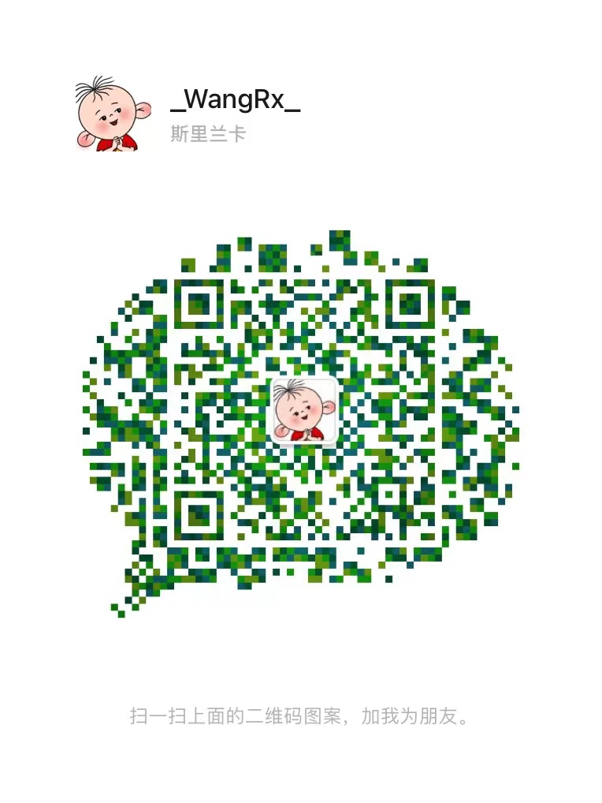

汪如祥
前端开发工程师 / 深圳or广州
基本信息
- 汪如祥 / 男 / 28岁（1995.01）
- 深圳市宝安区
- 在职-两周内到岗
联系方式
技能点（不限于）
二维码

教育经历
-
江西农业大学 - 软件工程（统招-本科）
工作经历
-
[经历1]TCL实业（深圳TCL新技术有限公司）－前端开发主任级工程师
- 负责运营平台的开发，迭代，优化；
- 负责微信小程序，公众号业务开发；
- 负责电视端H5页面开发；
- 负责移动端H5页面开发；
- 负责数据可视化业务开发；
- 负责用户体验优化，技术演进与创新；
- 负责公司前端技术的选型和框架设计；
- 负责公司通用组件库的完善；
- 负责相关设计文档的输出和整理；
-
[经历2]深圳市网安计算机安全检测技术有限公司－研发经理(前端组)
- 了解并根据项目需求设计原型图以及利用Photoshop进行界面设计产出源文件PSD；
- 对公司移动端和 PC 端的项目进行代码开发、维护以及升级；
- 负责团队管理；负责网站前端架构的建立和实施，主导前端框架开发，并据此制定合理有效的开发规范；
- 负责梳理和优化前端开发流程，搭建高效集成的前端开发环境，提高前端开发质量和效率；
- 把握前端技术发展潮流，牵头前端新技术的研究，并用新技术推动业务发展；
- 对项目的进行需求分析以及项目的性能优化；
- 调用后台接口实现数据交互；
- 微信公众号开发以及微信小程序的代码开发；
- 自主实现项目的人机交互设计，提高用户体验；
- 根据项目的具体要求采取优雅降级的方式兼容 IE、Firefox、Chrome等 浏览器；
- 负责部门前端组任务分配以及技术难点攻破等；
-
[经历3]香港资讯卫视有限公司－前端开发工程师
- 略；
自我评价/期望
- 1、熟悉掌握vue、elementUI、mintUI，可以高效利用vue全家桶完成项目需求；
- 2、熟悉掌握 React、Redux、React Router，可以快速融入团队,并且拥有独立开发能力；
- 3、熟悉掌握微信公众号开发以及微信小程序的代码开发；
- 4、熟悉bootstrap、Echarts、uni-app、mpvue、iview、vant、ant design以及sass和less等；
- 5、熟悉 JavaScript，且有良好的文档撰写能力；
- 6、熟悉 HTML5 和 CSS3，语义合理，结构清晰，能够还原视觉设计，并兼容业界承认的主流浏览器；
- 7、熟悉 jQuery 框架，通过 jQuery 框架完成所需要的设计，且具有良好的文档阅读能力和实践能力；
- 8、熟练掌握pxcook、VS Code、HBuilder、FlashFXP等工具,能熟练完成psd切图，并用前端代码百分百还原设计图；
- 9、熟练掌握MockingBot、Axure和PhotoShop，可以用其设计并制作原型；
- 10、熟悉主流浏览器的兼容性问题，并有实际的解决方案；
- 11、了解 Node.js，能实现常用的中间层服务；
- 12、了解AngularJS，如果公司需求,可以快速上手,步入工作；
[对前端开发具有浓厚的兴趣，并拥有较为广阔的互联网视野，能够快速融入工作环境，能够承受较大的工作压力]“改变能改变的，接受不能接受的”是我给自己总结的“十三字箴言”，共勉。
个人项目（部分）
-
[项目1]儿童平板launcher（TCL Kids）
- 前端技术栈：React+Umijs+AntDesign+dva等前端前沿技术
-
[目标]TCL Kids业务线，可通过该项目的cms系统设置下发资源内容至TCL教育平板，并且还可真的不同平板终端下发特定的页面布局，并且在用户同意下可收集部分信息图表化展示在该系统中，内含家长模式等
[团队]同 2 位后端开发同学一起
[项目职责]
1．根据产品经理提出的迭代需求独立进行前端界面的代码实现；
2．根据后端同事提供接口独立进行数据的联调；
3．根据TCL内部部署方案独立进行前端项目的测试环境部署；
4．开发完成后根据测试用例独立进行自测通过后进行提测，遗漏bug问题的修复以及通过测试后的正式环境部署；
-
[项目2]国内广告业务（广告管理系统+广告投放平台+广告物料审核平台+TV侧广告落地页）
- 前端技术栈：React+Umijs+AntDesign+dva等前端前沿技术 + TV（Vue2+Vuex+Vue-router+Axios+Webpack 4+Vant+Sass等前端前沿技术）
-
[目标]TCL国内广告业务，可在这些cms平台进行广告内容、广告下发策略、广告物料的第三方审核等功能，并且TV侧相关活动广告落地页功能实现等
[团队]同 2 位后端开发同学一起
[项目职责]
1．根据产品经理提出的迭代需求独立进行前端界面的代码实现；
2．根据后端同事提供接口独立进行数据的联调；
3．根据TCL内部部署方案独立进行前端项目的测试环境部署；
4．开发完成后根据测试用例独立进行自测通过后进行提测，遗漏bug问题的修复以及通过测试后的正式环境部署；
-
[项目3]海外电子说明书（cms+tv）
- 前端技术栈：CMS（React+Umijs+AntDesign+dva等前端前沿技术）+ TV（Vue2+Vuex+Vue-router+Axios+Webpack 4+Vant+Sass等前端前沿技术）
-
[目标]帮助用户在电视使用时减少用户疑惑，给出模块问题和常见问题解决方案
[团队]同 2 位后端开发同学一起
[项目职责]
1．根据产品经理提出的需求以及设计师提供的GUI独立进行前端界面的代码实现；
2．根据后端同事提供接口独立进行数据的联调；
3．根据TCL内部部署方案独立进行前端项目的测试环境部署；
4．开发完成后根据测试用例独立进行自测通过后进行提测，遗漏bug问题的修复以及通过测试后的正式环境部署；
5．TV侧可访问链接：https://hwebook-html-o.api.leiniao.com/ebook/index.html#/home?zone=US&clientType=TCL-NA-RTD51M-S1&language=en；CMS侧部署至内网地址https://eu-idsaas-o.api.leiniao.com/page/cms-electronicManual-overseas/#/：
-
[项目4]T有料（微信小程序+管理系统CMS）
- 前端技术栈：微信小程序（WXML+WXSS+JavaScript+JSON+WeUI等前端前沿技术）+ 管理系统CMS（React+Umijs+AntDesign+dva等前端前沿技术）
-
[目标]建立TCL内部员工物料申请流程，方便内部员工在线申请所需的物料，同时也能根据物料消耗情况精准补货，以及精准了解物料消耗情况等
[团队]同 1 位后端开发同学一起
[项目职责]
1．根据产品经理提出的需求以及设计师提供的GUI独立进行前端界面的代码实现；
2．根据后端同事提供接口独立进行数据的联调；
3．根据TCL内部部署方案独立进行前端项目的测试环境部署；
4．开发完成后根据测试用例独立进行自测通过后进行提测，遗漏bug问题的修复以及通过测试后的正式环境部署；
-
[项目5]智能会议管理系统+Tmeet（微信小程序）
- 前端技术栈：Tmeet微信小程序（mpvue+vant+flyjs等前端前沿技术）+ 管理系统CMS（Vue+Vuex+Vue-router+elementUI+Axios等前端前沿技术）
-
[目标]TCL商用设备会议机终端会议在线预约、会议室在线管理、会议人员管理、会议在线纪要下发等功能；
[团队]同 2 位后端开发同学一起
[项目职责]
1．根据产品经理提出的需求以及设计师提供的GUI独立进行前端界面的代码实现；
2．根据后端同事提供接口独立进行数据的联调；
3．根据TCL内部部署方案独立进行前端项目的测试环境部署；
4．开发完成后根据测试用例独立进行自测通过后进行提测，遗漏bug问题的修复以及通过测试后的正式环境部署；
-
[项目6]商显移动端H5
- 前端技术栈：Vue+Vue-router+Sass+Vuex+Vant+Axios等前端前沿技术
-
[目标]TCL会议机终端设备上面涉及的H5页面，其中功能包括图片分享、投票、计分器、文字提取等
[团队]同 1 位后端开发同学一起
[项目职责]
1．根据产品经理提出的需求以及设计师提供的GUI独立进行前端界面的代码实现；
2．根据后端同事提供接口独立进行数据的联调；
3．根据TCL内部部署方案独立进行前端项目的测试环境部署；
4．开发完成后根据测试用例独立进行自测通过后进行提测，遗漏bug问题的修复以及通过测试后的正式环境部署；
5．其中投票小功能相关访问地址：扫码发起投票：https://cloud.eshowcloud.com/comments/#/vote?token=10&language=cn；扫码参与投票：https://cloud.eshowcloud.com/comments/#/voteJoin?token=10&language=cn；
-
[项目7]广东北源律师事务所官网 Demo
- 前端技术栈：vue-cli + vue3.0 + vuex + vue-router + axios + element-ui等前端前沿技术
-
[目标]按照公司要求宣传并介绍广东北源律师事务所所代码开发的官网
[项目职责]
1．网址(http://www.beiyuanlawyer.com)，可通过网址查看该项目；
2．使用vue全家桶（vue-cli + vue3.0 + vuex + vue-router + axios + element-ui）进行项目代码开发；
3．使用公司内网SVN对代码进行统一管理与更新，避免代码出现问题；
4．根据设计图源文件运用CSS/HTML技术100%代码实现；
5．运用webpack打包工具对代码进行打包处理并且通过FlashFXP工具对代码进行远程发布；
-
[项目8]汕头网警微站（微信公众号+后台管理系统）
- 前端技术栈：vue-cli + vue3.0 + vuex + vue-router + axios + element-ui等前端前沿技术
-
[目标]因公司与汕头网警有项目合作,所以帮助汕头网警做公众号以后后台数据管理系统
[项目职责]
1．使用Photoshop对原型图进行设计得到PSD设计原稿；
2．运用 CSS3 实现项目动画需求；
3．页面结构组件化，常用组件封装，方便复用；
4．解决多端适配问题，并有适当的解决方案；
5．关注微信公众号“汕头网警巡查执法”可以了解查看项目详情；
-
[项目9]第三方证据保全系统宣传网站 Demo
- 前端技术栈：HTML+CSS+JavaScript+JQuery+Ajax等前端前沿技术
-
[目标]第三方证据保全系统宣传网站.集团旗下子公司的官网
[项目职责]
1．项目的构思和设计；
2．使用Photoshop对设计原稿进行切图获取项目过程中需要的图片素材；
3．根据设计图100%代码实现项目界面；
4．使用 CSS3 新特性设计并实现项目界面的动画效果以及交互；
5．使用渐进增强的构建方法,配合百分比布局开发页面；